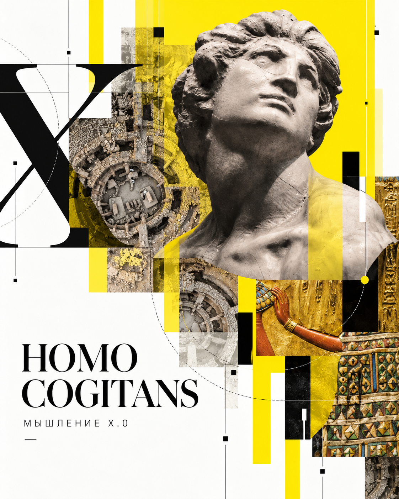

1.0
Кооперативно-миметическое
Совместное телесное действие; показ, подражание, поправка. Достоверность — в состоятельности действия и встрече с сопротивлением ситуации.
Открывает: передаваемую способность совместно действовать.Ты уже видел схему 1.0–6.0. Хочу показать, что стоит за ней: не перечень эпох или типов людей, а попытка понять, как меняются сами способы мыслить, удостоверять истину и быть в мире.

Меняется и то, что для нас считается настоящим, достаточным основанием и правильным способом ответа. Именно это пытается увидеть «Мышление х.0».
В твоей работе встречаются академическое преподавание и живая культура танго — музыка, её история, запись, милонга, трактовки исполнителей и передача опыта. Возьму этот близкий тебе мир как пример: за разными отношениями к нему могут стоять различные способы устанавливать, чему доверять и как действовать. Но ни один пример сам по себе ещё не доказывает устройство целой формы мышления.
В танце можно телесно почувствовать согласованность с другим. В архиве — восстановить сохранённое свидетельство. В разговоре — потребовать аргумента. В исследовании — проверить гипотезу процедурой. Ни одно из этих отношений не исчерпывает остальных. Однако и одно действие само по себе ещё не делает целостную форму мышления.
Здесь важно различить три ракурса: стадия — историческое становление и господство формы; форма — её устойчивое устройство; режим — как она действует в конкретной современной ситуации. Нумерация 1.0–6.0 обозначает генетический порядок модели, а не «качество ума» или уровень человека.
У генетического основания теории две разные линии. Суггестия и контрсуггестия ставят вопрос, как воздействие другого перестаёт непосредственно определять ответ человека. Между воздействием и принятием ответа открывается возможность собственного различения — но само сопротивление ещё не означает, что человек прав.
Дипластия — удержание действительно несовместимых элементов в одном акте без немедленного снятия противоречия. Это не любое «и то, и другое». В теории такая напряжённость способна открывать новые различения, но связь этой реконструкции с историей мышления требует проверки. Поэтому перед нами философско-генетическая гипотеза, а не экспериментально доказанная история происхождения разума.
Форма — это не жест, символ, текст или прибор сами по себе. Это связная организация четырёх отношений.
Через что человек получает доступ к миру?
Что признаётся достаточным основанием?
Кто и с каким правом отвечает?
Каким образом мир открывается человеку?
Если заменить записную книжку программой, ещё не возникла новая форма мышления. Существенный вопрос: изменился ли сам способ устанавливать основания, занимать позицию и действовать? Координаты взаимно обусловлены — это не четыре независимые галочки.
Совместное телесное действие; показ, подражание, поправка. Достоверность — в состоятельности действия и встрече с сопротивлением ситуации.
Открывает: передаваемую способность совместно действовать.Миф, имя, ритуал, символ. Отсутствующее и превышающее текущую сцену становятся действенными в общем культурном порядке.
Открывает: устойчивую причастность и смысл за пределами наличного.Письмо, запись, норма и признанный корпус. Сохранённое становится адресуемым и действует без присутствия исходного свидетеля.
Открывает: накапливаемый, координируемый длительный мир.Понятие, вопрос, диалог, аргумент. Происхождение утверждения уже не освобождает его от проверки основания другой мыслью.
Открывает: общезначимое обоснование и право на вопрос.Предельное обращение, истолкование и преобразование жизни. Истина требует не только понимания, но незаменимого личного ответа перед превосходящим основанием.
Открывает: совесть и личную ответственность; не равно просто «мнению».Метод, эксперимент, прибор, модель и воспроизводимая проверка. Результат обосновывается при условиях, доступных для независимого удостоверения.
Открывает: проверяемое знание и управляемое преобразование.Выбери одну форму и посмотри, как меняются не просто инструменты, а взаимосвязанное устройство истины, субъекта и отношения к миру.
Возникшая исторически форма, согласно х.0, не исчезает при появлении следующей. Она может продолжать действовать в преобразованных современных режимах — у человека, в обучении, культуре и институтах.
Здесь особенно интересна твоя работа с музыкальной традицией: живое танцевальное действие, память записей, передача культурного опыта, вопрос о смысле и о точности исторического описания. Их возможные связки можно исследовать, но нельзя превращать в диагноз твоего мышления.
Переключи ситуацию. Это предположительные конфигурации, а не измерение Михаила или проценты способностей.
Отсюда и философская трудность: как различать границы полномочий разных способов знания? Практический опыт может быть достоверен для действия, не удостоверяя историческую дату; архивная фиксация не решает вместо человека вопрос личной совести; измерение темпа не объясняет всего переживаемого смысла музыкальной встречи.
Шесть форм — морфология. Для разговора о том, как способности изменяются, у теории есть другое ядро: Тройная спираль.
Представь, что разбор музыкального материала становится внешней записью и доступной системой примеров. Это способ вынести часть работы вовне. Но тот, кто только нажимает кнопку или получает готовый ответ, ещё не обязательно изменил собственную способность различать музыку. Присвоение — если меняется сам способ слышать, понимать и действовать. Пульсация — поисковое движение, способное открывать новое, но не гарантирующее новацию.
Нажми на каждое движение. Это отношения с обратными связями, не алгоритм трёх обязательных шагов.
Например, созданная нотация, музыкальный архив или образовательная методика не просто сохраняют результаты: они могут изменить будущий слух, вопрос, способ преподавания и саму организацию опыта. Но иногда внешнее средство лишь подменяет деятельность. Из роста технической мощности не следует рост субъекта.
Одна из самых интересных идей х.0: специфическая мощность формы способна поставить перед ней такой вопрос, который нельзя полностью решить, не изменив её собственные основания.
Это не значит, что форма «плохая» или устарела. Напротив: именно её достижения могут сделать видимой границу, которую раньше не удавалось даже сформулировать.
Пример из работы с историческими источниками. Посмотри, как меняется смысл проблемы — и почему «не получилось» ещё не доказывает предел формы.
Историческое изменение господствующей формы нельзя вывести из единичного спорного документа, гениальной идеи или нового прибора.
Смена того, какой способ действия ведёт сейчас, не является историческим переходом от 3.0 к 4.0 или от 5.0 к 6.0.
И ещё существенная граница: 7.0 пока не определена. В Трактате это открытый горизонт возможной новой морфологии, а не установленная стадия. Появление ИИ само по себе не доказывает её рождения.
Теория нужна мне не как готовая таблица, которую следует принять, а как способ поставить содержательные вопросы — в том числе такие, на которые сама она ещё не знает окончательного ответа.
Когда мы обращаемся к истории музыки, что придаёт утверждению силу: документ, живая преемственность, убедительное истолкование или воспроизводимая проверка? Где у каждого основания свои права?
Как отличить использование готового способа или материала от настоящего присвоения — когда у ученика меняется сама способность слышать, различать и действовать?
Что стало бы для тебя сильным контрпримером к этой теории? Какое наблюдение заставило бы не просто уточнять частность, а менять саму морфологическую модель?
Миша, если после этой страницы тебе захочется спорить — это, пожалуй, самый интересный исход. Шесть форм здесь не завершение ответа, а начало разговора о том, что происходит с человеком, когда меняется сама возможность мыслить.
Это авторская философско-историческая теория, находящаяся в развитии. Её понятия и внутренняя связность не равны независимой историко-эмпирической верификации. Дата появления формы, её структура, современные режимы и положение конкретного человека требуют разных свидетельств.
Примеры из танго здесь служат только мысленным инструментом для понимания различений. Они не устанавливают, что музыкальная практика целиком принадлежит какой-либо одной форме. Личное понимание и работа Михаила не диагностируются этой страницей.
Теоретическая основа: «Мышление х.0», рабочий Трактат v5.2 (21.09.2026), прежде всего разделы I–VI и VIII. Это учебное редакционное введение, а не замена полного Трактата или его доказательная экспертиза.
О контексте адресата: сведения об интересе Михаила к теории и о преподавании — со слов Дениса; участие в танго-культуре, работа диджеем, образовательные видеолекции и семинары упоминаются в публичной программе организаторов «Иван Купала» и «Кубка Урала». Название академии не подтверждено независимым источником и потому не используется в тексте.